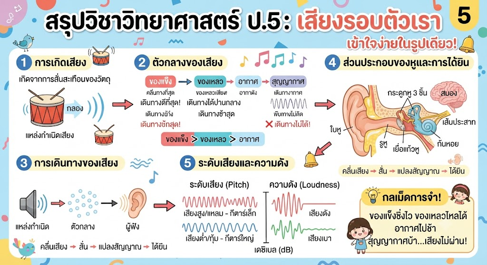

สรุปเรื่องเสียงรอบตัวเรา:

"ของแข็งชิ่งไว ของเหลวไหลได้ อากาศไปช้า สุญญากาศบ้า...เสียงไม่ผ่าน!"
กระบวนการคิด: เวลาวิเคราะห์ข้อสอบ ให้ถามตัวเองเสมอว่า "แหล่งกำเนิดคืออะไร? กำลังสั่นแบบไหน? ตัวกลางรอบข้างคืออะไร?" ถ้าเข้าใจจุดนี้ จะทำข้อสอบเรื่องเสียงได้ทุกข้อโดยไม่ต้องท่องจำครับ